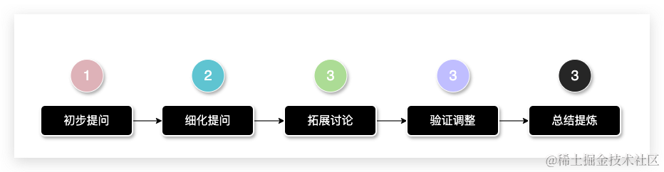
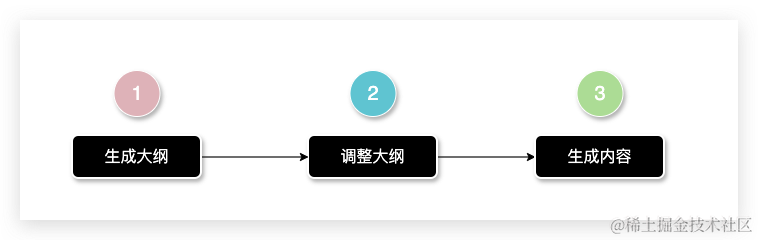
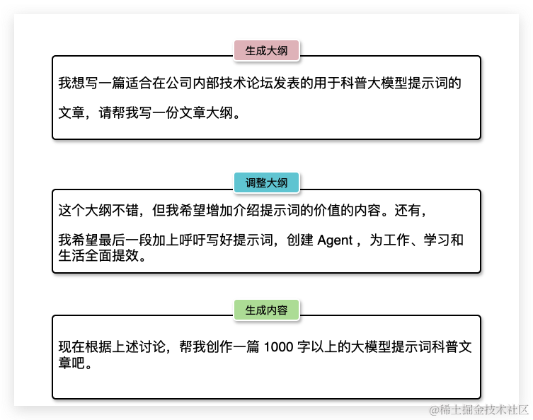

一、前言
许多人希望在一次对话中就能得到满意的答案，然而在很多情况下，这是不现实的。如果我们对某个知识领域了解不够深入，无法在一开始就与大语言模型进行深入对话。此时，我们只能先提出一些简单的问题，然后逐步深入，以获得最终想要的答案。有时候，即使我们清楚需要提问的问题，但由于编写提示词时不够清晰或存在歧义，模型的回答也可能不令人满意，这时需要根据结果进行二次调整。
本节重点介绍通过循序渐进的迭代式提问方法，来获得更优质的答案。
二、何谓迭代式提问？
迭代式提问是一种渐进的信息获取策略，通过不断细化和扩展问题，逐步引导 AI 提供更加准确和深入的回答。通过迭代式提问，我们可以逐步细化问题和答案。首先提出一个广泛或基础的问题，然后逐步细化。在迭代过程中，若发现对话中有错误或不符合要求的内容，可以通过手动或进一步对话进行纠正和调整。
例如，如果我们希望 AI 按照我们的思路进行文章创作，可以先让 AI 生成大纲。如果大纲存在问题，就可以让 AI 进行调整。确认大纲无误后，再进行正文创作。如果创作的文章存在问题，也可以指出具体问题，让 AI 继续优化。
三、为什么进行迭代式提问？
迭代式提问不仅是一种有效的学习和获取信息的方法，还能帮助我们更精准地利用大语言模型。
迭代式提问有以下好处：
-
提升理解和精确度：在初次提问时，由于问题可能不够具体或缺乏上下文，AI 的回答可能不完全符合预期。通过迭代式提问，可以不断澄清和细化问题，使得 AI 的回答越来越精准，从而提升信息的准确性和实用性。
-
逐步深入复杂主题：复杂的主题通常需要多层次、多角度的理解。迭代式提问允许我们从基础问题开始，逐步深入到更复杂的细节和关联内容。这样不仅能帮助我们更好地掌握复杂主题，还能让 AI 更全面地展现其知识储备。
-
减少信息过载：一次性提出过多或过于复杂的问题，可能会导致信息过载，让回答变得冗长且难以理解。通过逐步提出问题，我们可以控制信息量，确保每一步的内容都易于消化和理解。
-
动态调整和优化：在对话过程中，随时根据AI的回答调整提问方向，可以帮助我们迅速发现和纠正误解或错误假设。这种动态调整机制，使得我们能够灵活地引导对话走向预期目标。
-
培养系统性思维：迭代式提问有助于培养我们系统性思维能力。通过不断提出相关联的问题并逐步解决，我们可以更全面地理解问题的各个方面，形成对主题的整体认识。
四、如何进行迭代式提问？
4.1 通用迭代流程
如果我们对某个知识了解不够深入，无法在一开始就与 AI 进行深入对话，可以参考以下通用的迭代式提问流程：

-
初步提问：从一个广泛或基础的问题开始，以建立与 AI 的初步对话。
例如，如果你对某个技术概念不太了解，可以先问：“什么是[技术概念]？”
-
细化问题：基于 AI 的初步回答，逐步细化你的问题，深入探讨特定细节。
例如，接着问：“这个技术概念的主要应用场景是什么？”
-
扩展讨论：围绕某个核心概念或细节，进一步扩展讨论，了解其相关联的知识点或实际应用。
例如：“在[具体场景]中，这个技术是如何实现的？”
-
验证和调整：根据 AI 的回答，不断验证你的理解并调整问题方向，确保信息准确和全面。
例如：“这种实现方式有哪些优缺点？”
-
总结和提炼：在对话结束时，总结已获得的信息，提炼出关键要点，并进行概括总结。
例如：“总结一下，这个技术在[场景]中的实现方式及其优缺点。”
在运用迭代式提问技巧时，可以结合多维度的提问策略。例如，在细化问题、拓展讨论和验证调整时，可以从时间、空间、逻辑、角色、优缺点等多个维度进行提问。
接下来，我们以“杭州旅游景点推荐”为例演示迭代式提问：
- 初步提问：
- 用户：我想去杭州旅游，有哪些推荐的景点？
- AI：杭州有很多值得一游的景点，比如西湖、灵隐寺、雷峰塔和西溪湿地。
- 细化问题：
- 用户：如果我只有三天时间，应该选择哪些景点？
- AI：如果只有三天时间，推荐你第一天游览西湖，第二天参观灵隐寺和雷峰塔，第三天可以去西溪湿地和河坊街。
- 扩展讨论：
- 用户：在西湖有哪些必去的景点？
- AI：在西湖，你可以游览断桥残雪、苏堤春晓、花港观鱼和雷峰塔等景点。
- 验证和调整：
- 用户：游览西湖的最佳方式是什么？
- AI：游览西湖的最佳方式是步行或骑自行车，这样可以慢慢欣赏美景。你也可以选择乘坐西湖游船，从湖上观赏两岸风光。
- 总结和提炼：
-
用户：总结一下，杭州三日游的行程应该怎么安排？
-
AI：第一天可以游览西湖，参观断桥残雪、苏堤春晓、花港观鱼和雷峰塔，步行或骑自行车游湖；第二天前往灵隐寺，参观寺庙和飞来峰，然后去雷峰塔俯瞰西湖全景；第三天游览西溪湿地，体验原生态的湿地风光，最后到河坊街品尝杭州特色美食，购买纪念品。
4.2 三步迭代法
当我们对一个问题只有初步的想法时，可能需要通过与 AI 的多次对话来不断丰富思路，以获得理想的答案。在这种情况下，可以尝试“三步迭代法”。

所谓三步迭代法，即先生成大纲，然后对大纲进行调整，大纲符合要求后再生成目标内容。通过这种方法，可以在迭代过程中及时纠正错误，使生成的结果更加符合预期。该方法适用于文章写作、策划方案的制定以及其他需要创意性思考和策略规划的任务。

如图所示，我们在创作科普大语言模型提示词的文章时，可以先让大语言模型生成一份文章大纲；然后不断调整大纲内容；当大纲调整满意后，再让模型进行具体内容的创作。
大家在应用迭代式提问技巧时，如果大模型输出的内容需要调整未必非要通过对话的方式让它修改。如果有些改动通过描述比较麻烦，可以直接手动调整之后发给大语言模型，让他继续执行下一步处理。如大纲需要调整，我们手动修改大纲内容后直接告知大模型，再继续对话生成具体内容。
五、总结
本文分享了迭代式提问的概念和优势，还介绍了两种通过迭代式提问循序渐进地生成目标内容的方法：
-
通用的迭代流程：包括初步提问、细化问题、拓展讨论、验证和调整以及总结和提炼。这种方法帮助我们在对知识了解不够深入时，通过逐步细化和扩展问题，逐步引导 AI 提供更加准确和深入的回答。
-
三步迭代法：包括生成大纲、调整大纲和生成内容。该方法适用于需要创意性思考和策略规划的任务，通过对大纲的多次调整和迭代生成具体内容，可以确保最终结果符合预期。
在实行迭代式提问时，可以将多维度的提问策略综合运用，效果更佳。此外，在迭代过程中，既可以通过多轮对话进行调整，也可以手动修正错误，灵活运用这两种方法来优化生成内容。
你是否使用过三步迭代提问法？你还有哪些迭代式提问的经验？欢迎在评论区交流讨论。
六、练习题
- 选择一个你感兴趣的问题，实践迭代式提问法
COMMUNITY NOTES
读者评论
这篇文章暂时没有读者留言。